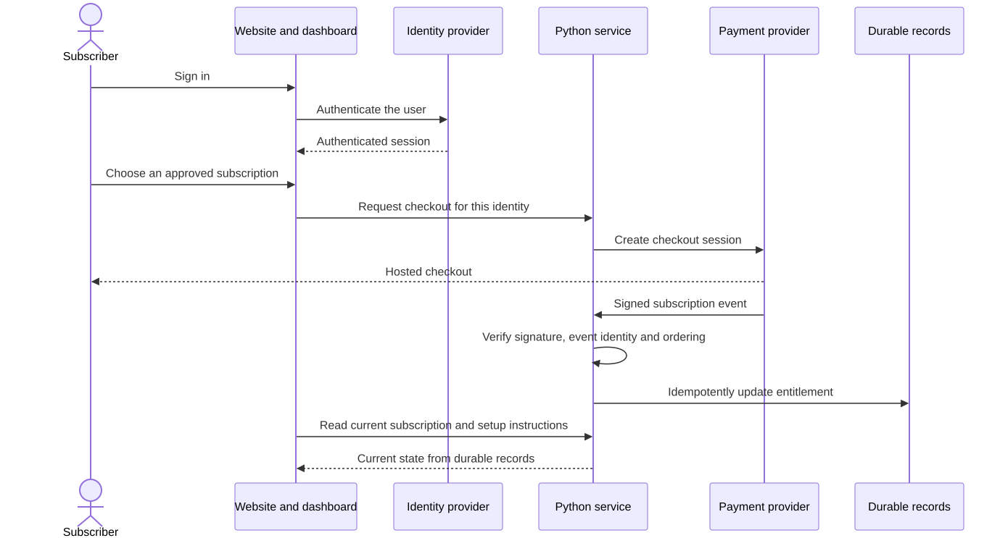
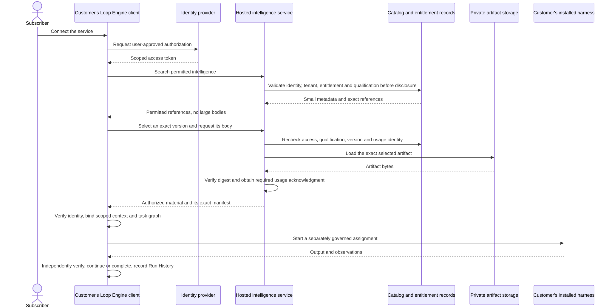

Loop Engine: first-release client and server
The service supplies intelligence. Customers run their harnesses. Accounts, payments, and storage can use managed services without moving customer task execution into our cloud.
Proposed deployment, not a launched service. The local runtime, provisioning rules, and local protocol integration have component tests. The website, remote authorization, payment lifecycle, and hosted storage integration still require implementation and qualification.
One runtime, separate configuration dimensions
Operational runtime type
└── Loop
├── Operational relationship: Starting, Spawned by, Queried by, Retrieved by, Connected from
├── Role: Practitioner, Intelligence, or Solution
├── Versioned role profile
├── Purpose and domain categories
├── Run mode: deterministic, hybrid, or non-deterministic
├── Step profile
├── Typed input and output contract
├── Loop condition
├── Exit condition
├── Graph relationships
├── Budget, permissions, and effect policy
├── Model settings when the selected mode permits a model
└── Run History records
System boundaries
These are software containers and trust boundaries, not individual executable Loop vertices. Vercel, Supabase, and Stripe are candidates. The Python service can use Vercel Functions or a qualified container host.

Sign-in and subscription

Retrieve intelligence, then run in the customer's environment

Current transport evidence covers local JSON-RPC sessions using protocol 2025-11-25 and a host-bound credential. Remote provisioning HTTP, OAuth integration, all-layer qualification adapters, and full typed template, graph, and package delivery remain open.
Remaining launch work · Hosting choices, limits, and primary sources